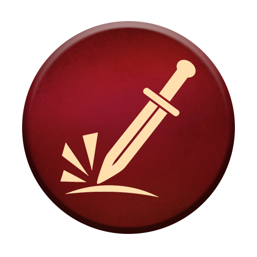

Common
Bag 5
Bloomis
Bloomis are shy yet fiercely loyal. Their antennae sense the pain of allies, prompting them to weave an arcane dance that shapes life energy into a shimmering, healing dew.
Heal
Restores this much of your life.
Lv.1: 1 · 5-round wait · Lv.2: 1 · 4-round wait · Lv.3: 1 · 3-round wait · Lv.4: 2 · 3-round wait
Common
Bag 6
Mystil
Mystil has a blue band that floats around its body, it's not just energy, but water in an ethereal state that never evaporates. It can easily deal with burns.
Burn Resistance
Removes this many burn stacks from you.
Lv.1: 1 · 5-round wait · Lv.2: 2 · 4-round wait · Lv.3: 3 · 3-round wait · Lv.4: 4 · 2-round wait
Common
Bag 5
Flammit
They say that the heat of its body is proportional to its level of happiness. It is very loyal to its companions and uses its flames to deal damage.
Burn
Applies this many burn stacks to a random enemy.
Lv.1: 1 · 4-round wait · Lv.2: 1 · 3-round wait · Lv.3: 2 · 3-round wait · Lv.4: 3 · 2-round wait
Common
Bag 5
Hemlok
Hemlok does not see the forest as a home, but as an arsenal. The stick it uses as a weapon was taken from a dead tree, and each strike causes poisoning.
Poison
Applies this many poison stacks to the selected enemy.
Lv.1: 1 · 4-round wait · Lv.2: 1 · 3-round wait · Lv.3: 2 · 3-round wait · Lv.4: 3 · 3-round wait
Common
Bag 10
Ruffin
Ruffin has a natural instinct for finding useful things. Thanks to its magical backpack, it can carry an immense amount of items for the player.
No fight ability. Its bag is the reason to bring it.
Common
Bag 7
Noctylis
Noctylis uses a staff to draw toxins from the player’s body into itself. The intense light in its bulb acts as a magical filter, burning away the poison and converting it into energy.
Poison Resistance
Removes this many poison stacks from you.
Lv.1: 1 · 4-round wait · Lv.2: 1 · 3-round wait · Lv.3: 1 · 2-round wait · Lv.4: 2 · 2-round wait
Common
Bag 6
Bulwark
Who needs reflexes with a shell like this? Bulwark takes 'turning your back on your problems' to a professional level: one strategic tuck and suddenly, a fatal blow is just an innocent 'clink' against his armor.
Round Shield
Gives you this much Physical shield.
Lv.1: 1 · 3-round wait · Lv.2: 2 · 3-round wait · Lv.3: 5 · 3-round wait · Lv.4: 8 · 3-round wait
Common
Bag 5
Mystslug
Mystslug’s shell acts as a magical reservoir, turning its carapace into an inexhaustible battery of protection. Its staff serves as the channeler of its power.
Magical Protection
Gives you this much Magical shield.
Lv.1: 1 · 3-round wait · Lv.2: 2 · 3-round wait · Lv.3: 5 · 3-round wait · Lv.4: 8 · 3-round wait
Common
Bag 5
Bogbreaker
Bogbreaker does not fight with elegance, it fights for results. Where its fists strikes, the grass does not grow and enemies do not rise again.

Assault Attack
Deals this much Physical damage to the selected enemy. Strength does not add to it.
Lv.1: 1 · 3-round wait · Lv.2: 2 · 3-round wait · Lv.3: 5 · 3-round wait · Lv.4: 8 · 3-round wait
Common
Bag 6
Sir Spellwhisk
Many underestimate him because of his size, but Sir Spellwhisk has read more books than most warriors have defeated enemies. His strength is far greater than his appearance suggests.
Magic Missile
Deals this much Magical damage to the selected enemy. Intelligence does not add to it.
Lv.1: 1 · 3-round wait · Lv.2: 2 · 3-round wait · Lv.3: 3 · 3-round wait · Lv.4: 4 · 3-round wait